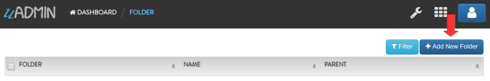
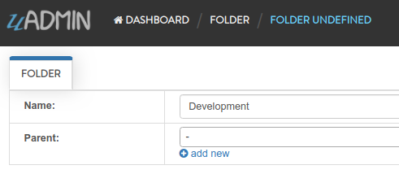
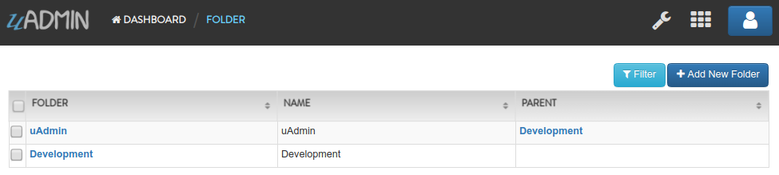

Document System Tutorial Part 2 - Creating and Registering a Model¶
In this part, we will discuss about creating and registering an external models in our application.
Before we start, let’s list down what are the requirements needed in order to build a document system. In each models, what are the necessary fields to meet the user’s goals.
In this tutorial, we will create the following models listed below:
Channel
DocumentGroup
DocumentUser
DocumentVersion
Document
FolderGroup
FolderUser
Folder
Let’s create a new file in the models folder named “folder.go” with the following codes below:
package models
import (
"github.com/uadmin/uadmin"
)
// Folder !
type Folder struct {
uadmin.Model
Name string
Parent *Folder
ParentID uint
}
// Returns the Name field
func (f Folder) String() string {
return f.Name
}
As you notice, the Parent field has a data type of a pointer of Folder and ParentID field of uint. This is a foreign key. It links the Parent field to the Folder model that returns the name.
Go to the main.go and register the Folder model inside by using uadmin.Register.
func main() {
// Register models to uAdmin
uadmin.Register(
models.Folder{},
)
// Some codes
}
It is written as models.Folder{} because models is the folder/package name while Folder{} is the name of the model struct.
Now run your application. As expected, the folder model is added in the Document System Dashboard. Click on “FOLDERS”.

Click “Add New Folder”.
Let’s add a record named “Development” as an example.
Result

Let’s add another record named “uAdmin” that has a parent of “Development”. In short, the path will look like this: Development/uAdmin where Development is a parent folder and uAdmin is a subfolder.

Result
In the next part, we will talk about linking models using a foreign key for folders.